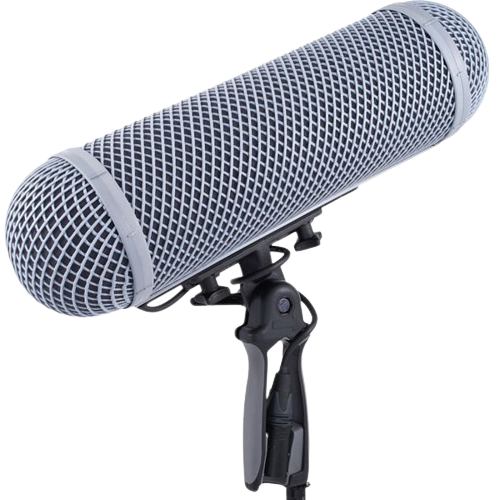
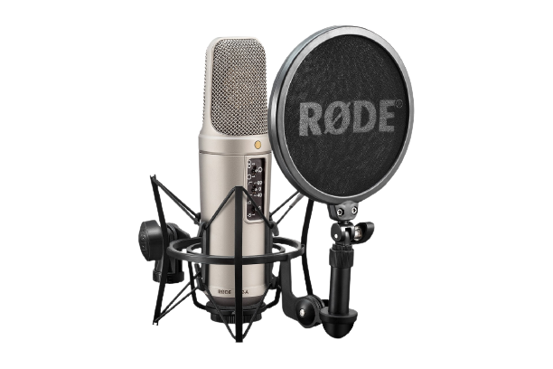
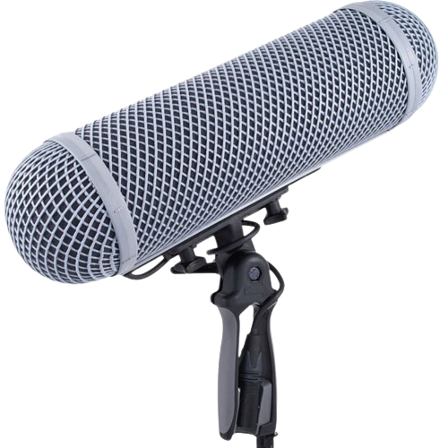
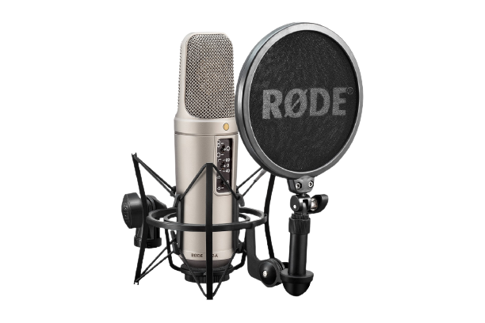

Création d'un tutoriel en vidéo
2022-23, IUT de Lannion
2022-23, IUT de Lannion
Nous avions pour projet de créer un tutoriel en vidéo (conception, écriture, réalisation) pour présenter le matériel audiovisuel utilisé en MMI. Pour ce faire nous avons utilisé un Canon 90D et un micro Rode NTA2 pour enregistrer les voix-off de la vidéo. Ce projet m’a aidé à comprendre certaines spécificités de la prise de son et d’image, car avoir un rendu propre était évidemment un des enjeux que nous avions. Aussi, j’ai pu commencer à utiliser DaVinci Resolve (montage vidéo) grâve à ce projet.
 


